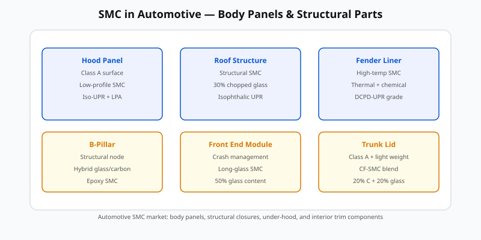
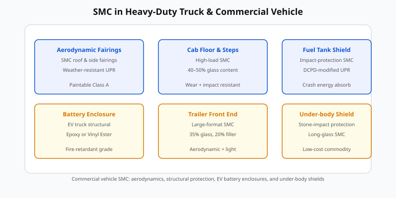
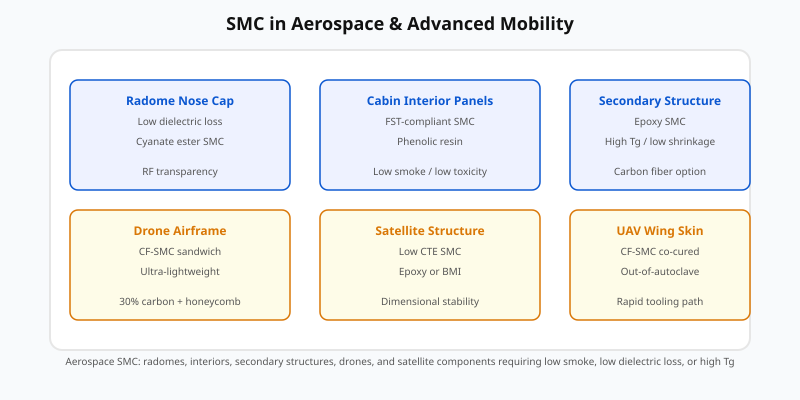

Case studies: automotive, truck, and aerospace applications
Each case study ties formulation, process design, tooling, and control decisions to measurable outcomes. The diagrams are conceptual representations of SMC part families; actual part geometry varies by OEM.
18.1 Automotive Class A body panel (sedan front fender)
A high-volume sedan fender requires Class A surface, paintability, dimensional stability, and impact resistance. The engineering challenge is balancing low shrinkage (surface quality) with sufficient flow to fill complex geometry.
Application overview: automotive

Formulation choice
- Resin: Isophthalic UPR with high LPA package (PVAc, 10 phr)
- Styrene: 30 phr (reduced for emissions)
- Initiator: Dual TBPEH + TBPB for staged cure
- Fiber: 20% chopped E-glass, 12.5 mm, fine tex
- Filler: Fine-ground CaCO₃ (60 phr)
Process design
- Tool: Class A polished steel; parting line at fender edge (trimmed later)
- Charge: single central charge with 1.15 coverage ratio
- Close profile: fast approach → 2 s vent stage → rapid pack → 120 s dwell at 150 °C
- Pressure: 8 MPa packing, 12 MPa dwell
Outcomes and controls
- Surface gloss: ≥ 80 GU at 60°
- Shrinkage: < 0.08% linear (verified by CMM)
- Porosity: < 0.5% void volume (density method)
- Impact: ≥ 12 J falling weight (full panel)
- Control: golden curve monitoring + thickness grid every 50 parts
18.2 Automotive structural component (B-pillar reinforcement)
A B-pillar inner reinforcement must absorb crash energy, resist intrusion, and maintain dimensional accuracy for door alignment. Surface finish is secondary but must not have sharp porosity.
Formulation choice
- Resin: Hybrid epoxy-VE or high-temp DCPD-UPR
- Fiber: 30% chopped S-2 glass (25 mm) or 20% carbon + 20% glass hybrid
- No LPA (shrinkage tolerated in hidden zone)
- Higher thickener level for green strength during handling
Process design
- Tool: shutoffs for hinge and latch features; vent at rib ends
- Charge: multi-point placement to fill ribs without excessive flow
- Close profile: moderate speed; venting stage prioritized
- Cure: 160 °C, 150 s dwell; embedded thermocouple for exotherm monitoring
Outcomes and controls
- Flexural strength: ≥ 150 MPa
- Compression after impact: ≥ 120 MPa
- Thickness tolerance: ± 0.15 mm on critical mounting features
- Control: DOE-optimized charge pattern; press force-position golden curve
18.3 Heavy-duty truck (aerodynamic side fairing)
A 1.2 m × 0.4 m aerodynamic fairing for a Class 8 truck must survive 10+ years of road exposure, resist stone impact, and reduce drag. It is a large, thin, cosmetic-exposed part.
Application overview: heavy-duty truck

Formulation choice
- Resin: DCPD-modified UPR (good surface, lower cost than iso-UPR)
- Styrene: 32 phr
- Initiator: Dual TBPEH + TBPB
- Filler: 70 phr CaCO₃ (mid-range grind for surface texture)
- Fiber: 25% chopped E-glass, 25 mm
- LPA: PMMA (7 phr) for moderate shrinkage control
- UV stabilizer: Hindered amine light stabilizer (HALS) + UV absorber (1 phr)
Process design
- Tool: large-area heated aluminum; zoned heating for uniformity
- Charge: two symmetric charges to minimize flow distance
- Close profile: extended vent stage (4 s) due to large area
- Cure: 145 °C, 180 s dwell; interior thermocouple to track exotherm
Outcomes and controls
- Surface waviness: < 40 µm on Class A zone
- Impact: ≥ 25 J falling weight (stone-impact simulation)
- Weatherability: 3-year Florida exposure with no blistering or fiber show-through
- Control: thickness CMM every part; surface profilometry on sample plan
18.4 EV battery enclosure (truck / commercial vehicle)
Battery enclosures for heavy-duty EVs must protect against crash, intrusion, thermal runaway, and environmental exposure. They are large, ribbed, and must meet stringent FST requirements.
Formulation choice
- Resin: Vinyl Ester or epoxy (superior chemical/thermal resistance)
- FR package: ATH (30 phr) + Mg(OH)₂ (10 phr)
- Fiber: 30% chopped E-glass or S-2 glass (25 mm)
- Filler: 60 phr CaCO₃ + silica blend
- Thermoplastic modifier: 5 phr for impact
- Coupling agent: amino silane for VE
Process design
- Tool: rib-intensive design; vents at every rib end; shutoffs for cable ports
- Charge: multiple small pads near ribs to ensure local fill
- Close profile: slow vent stage to allow air escape from deep ribs
- Cure: 170 °C, 300 s dwell; exotherm management critical in 8 mm wall
Outcomes and controls
- UL 94 V-0 achieved at 3.2 mm
- Compression strength: ≥ 180 MPa
- Thermal conductivity: 0.25–0.35 W/m·K (filler-dependent)
- Control: micro-CT porosity audit; thermocouple-based exotherm logging
18.5 Aerospace cabin interior panel (regional jet)
Interior panels must meet FAR 25.853 FST requirements, be lightweight, and integrate with lighting,IFE, and air ducting. Surface finish must be consistent for painting or film application.
Application overview: aerospace

Formulation choice
- Resin: Phenolic resol (inherently low smoke, no halogens)
- Filler: ATH (60 phr) for fire barrier and smoke suppression
- Fiber: 20% E-glass (12.5 mm) or 15% aramid for lower weight
- No styrene, no LPA (phenolic cure behavior differs)
Process design
- Tool: low-roughness aluminum; release film or in-mold coating for surface
- Charge: uniform blanket; no complex flow paths
- Close profile: moderate speed; careful venting to avoid resin bleed
- Cure: 160 °C, 240 s dwell; phenolic water byproduct must be vented
Outcomes and controls
- FAR 25.853 pass: 60 s burn < 65 mm, smoke density < 200
- Density: 1.6–1.7 g/cm³ (lightweight for interior)
- Flexural strength: 60–80 MPa
- Control: FST test every resin batch; CMM on mounting features
18.6 Aerospace secondary structure (UAV wing skin)
Unmanned aerial vehicle wing skins demand low weight, high stiffness, and dimensional stability in a wide temperature range. Carbon fiber SMC is an enabling material here.
Formulation choice
- Resin: Epoxy with latent hardener (dicyandiamide + imidazole)
- Fiber: 35% chopped carbon fiber (25 mm) or CF-SMC with aligned tow bands
- Filler: 30 phr fumed silica for viscosity control
- Thickener: Urea-based for epoxy
Process design
- Tool: aluminum or Invar for thermal stability; low draft for aerodynamic shape
- Charge: symmetric placement; foam preform inserts for sandwich cores
- Close profile: fast then pack; no extended vent stage needed
- Cure: 180 °C, 600 s dwell; post-cure at 200 °C for 2 h for full Tg development
Outcomes and controls
- Flexural modulus: 35–45 GPa
- Density: 1.55–1.65 g/cm³
- CTE: < 15 µm/m·K (matched to carbon)
- Control: laser scan for warpage; DMA Tg on every batch
18.7 Cross-cutting lessons from the case studies
- Formulation drives process window: each resin/fiber/FR combination requires its own close profile, vent strategy, and dwell schedule.
- No universal “best” charge pattern: geometry, wall thickness, and feature complexity dictate placement.
- Instrumentation pays back: thermocouples in thick parts, golden curves, and post-mold DOC/Tg checks prevent costly field failures.
- Qualification must be application-specific: Class A panels need gloss/DOI; structural parts need impact/CAI; interiors need FST.
- Scale-up is not linear: doubling thickness changes heat-up time by 4× and exotherm behavior dramatically.